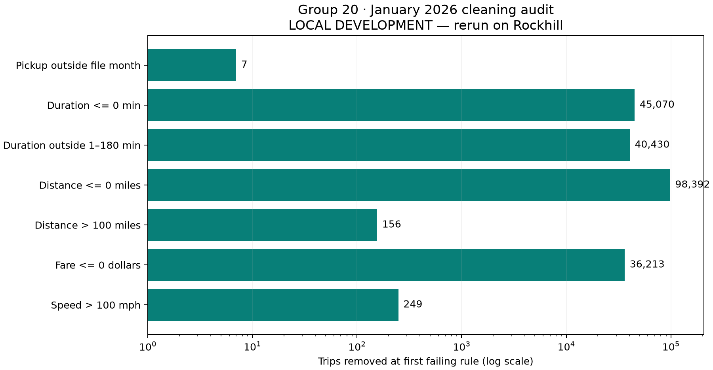

CS4207 · Group 20 · NYC Yellow Taxi · Regression · Member names: [add all four names]
A · Problem & data
Estimate duration in minutes at pickup, assuming intended destination zone is known.
3,724,889 January 2026 raw trips → 3,504,372 retained locally.
Batch reading; in-month pickups; valid duration, distance and fare; speed quality check. Explicit missing-value handling.

Dropoff time, fare and realised distance are excluded from X. Verify counts on Rockhill.
B · EDA & features
AWAITING B
Duration distribution; pickup time and zone insights; approved feature list and leakage exclusions.
No invented charts.
C · Method & baseline
AWAITING C
Time-based train/validation/test boundaries; model and shared MAE/RMSE/R² evaluation; actual baseline results.
Parallel design
AWAITING TEAM
Pipeline diagram: data parallelism + TWO implemented task-parallel patterns.
D · Results & conclusion
AWAITING D
Actual Rockhill model results; repeated sequential/parallel timings and speedup; two observed nondeterminism sources and verified fixes; limitations.
Source: NYC TLC. Every final result must be traceable to the solution notebook. No final model conclusions have been generated in this A-only package.